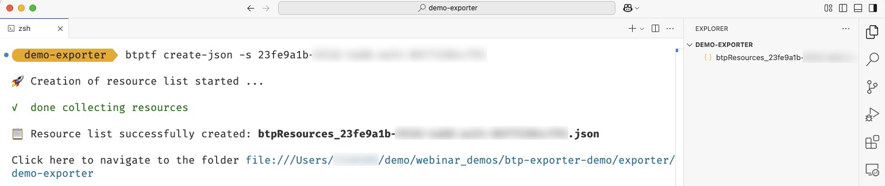
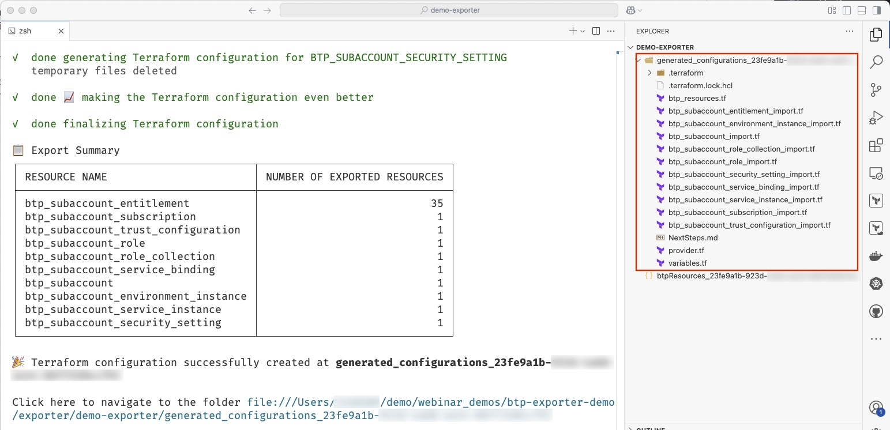
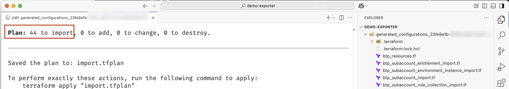
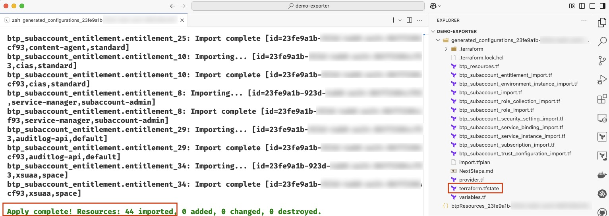

Getting Started
The btptf CLI offers two ways to export BTP resources:
- Exporting resources via JSON (recommended)
- Exporting resources
Let's look at how both flows work for a simple subaccount export.
Option 1: Basic Flow to Export a Subaccount via JSON (Recommended)
This is a two-step process where a JSON is created as a resource inventory and used as a basis for the export.
-
Create a JSON file with a list of BTP resources to be exported.
Review and adjust the JSON file according to your needs.btptf create-json -s <subaccount id> -
Export resources from SAP BTP via a JSON file.
btptf export-by-json -s <subaccount id>
Option 2: Basic Flow to Export a Subaccount Directly
Export resources from SAP BTP directly, by specifying their IDs.
btptf export -s <subaccount id>
You find a comprehensive overview of the commands and their options and flags in the documentation.
How to Work With the Exported Configuration Files
Independent of the flow you have chosen, the export created Terraform configuration files and import blocks for you. You'll need these files to run 'terraform apply' and import the state.
At export, the generated code was refined by the btptf CLI as outlined in the documentation.
However, we strongly recommend that you review the code before you execute the state import.
Here are some points to consider:
-
Check provider version constraints: Check the version constraint in the provider configuration (provider.tf) i.e. make sure that the constraints are compliant with the rules of your company like cherry-picking one explicit version. We recommend to always use the latest version independent of the constraints you add.
-
Cleanup configuration of resources: The configuration (btp_resources.tf) is generated based on the information about the resources available from the provider plugin. All data including optional data that got defaulted (e.g. usage in the btp_subaccount resource) is added to the configuration. To reduce the amount of data you could remove optional attributes that you don't want to have set explicitly.
-
Declare variables: The generated code already contains some variables in the variables.tf file. Depending on your requirements you might want to add further parameters to the variable list. For example, the name of a subaccount.
-
Configure backend: The state of your configuration should be stored in a remote state backend. If you have not injected an existing remote state at export (see How to Add a Remote Backend Configuration), make sure to add the corresponding configuration in the provider.tf file manually. You find more details in the Terraform documentation.
-
Validate the import: Validate that the import is possible by executing 'terraform plan'. Depending on the number of resources, the planing should return a message like this:
Plan: n to import, 0 to add, 0 to change, 0 to destroy.
Now you're all set to run 'terraform apply', which will import the state and thus bring your SAP BTP resources under the management of Terraform.
Detailed Example of Exporting a Subaccount via JSON
The below example looks in more detail at how to use the btptf CLI to export an existing subaccount as Terraform configuration and state.
-
Launch SAP BTP Cockpit and navigate to an existing subaccount.
-
In the subaccount, navigate to the 'Overview' tab and find the 'Subaccount ID'
-
Open a terminal session.
-
Generate the json file which contains the list of resources to be exported. This json file can be generated by running the btptf CLI command btptf create-json -s
The resources list file with the name btpResources_btptf create-json -s <YOUR SUBACCOUNT ID>.json e.g, btpResources_<YOUR SUBACCOUNT ID>.jsongets generated.
-
Edit the json file and remove the resources which need not be exported and managed by Terraform.
-
Run the btptf CLI command to export Terraform configuration using the JSON file.
btptf export-by-json -s <YOUR SUBACCOUNT ID>As the JSON file is generated with the default name you do not need to to explicitly specify it.
-
The Terraform configurations will be generated under the folder
generated_configurations_<YOUR SUBACCOUNT ID>. The output of the command will show an export summary which contains the information about which 'Resource Names' and their respective count.
-
Review the file NextSteps.md under the folder
generated_configurations_<YOUR SUBACCOUNT ID>and adapt the Terraform configuration files as mentioned in the document. -
In the terminal, navigate to the folder
generated_configurations_<YOUR SUBACCOUNT ID>and run theterraform plancommand. This will show a plan of how many resources will be imported, added, changed and destroyed.
-
Run the command Terraform apply. This will import the Terraform state and store it in the terraform.state file in under the folder
generated_configurations_<YOUR SUBACCOUNT ID>.
-
Now, to modify your BTP resources in this subaccount you can change to Terraform configuration files and run a Terraform apply to trigger the changes.